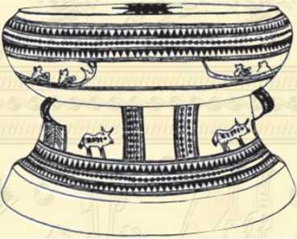

Giai Thoại 6

oa Thành hay cổ Loa Thành, còn có tên khác là Tư Long Thành, người Trung Quốc thường gọi là Côn Lôn Thành, chính là kinh thành của nước ta thời An Dương Vương. Di tích Loa Thành nay vẫn còn ở huyện Đông Anh, ngoại thành Hà Nội. Truyền thuyết nói Loa Thành gồm đến chín vòng, được đáp theo kiểu xoáy hình trôn ốc, nhưng di tích còn lại chỉ thấy có ba vòng, dài tổng cộng hơn mười sáu cây số. Loa Thành là công trình kiến trúc lớn nhất của nước nhà thời cổ đại, là chứng tích bất diệt của ý chí và năng lực sáng tạo của tổ tiên ta. Việc đắp thành khó khăn này đã được tiến hành như thế nào? Sách Đại Việt sử kí toàn thư (ngoại kỉ, quyển 1, từ tờ 6a đến tờ 7b) chép rằng:
“Thành này cứ hễ đắp xong lại bị sụt lở, khiến Nhà vua rất lấy làm lo. Nhà vua bèn trai giới sạch sẽ, khấn trời khấn đất và các vị thần núi, thần sông, rồi khởi công đắp lại”.
... “Mùa xuân, tháng ba, chợt có thần nhân đến trước cửa thành, trỏ vào thành rồi cười mà nói rằng:
Đắp như thế thì đến bao giờ mới xong?
Vua liền mời vào điện để hỏi. Thần nhân nói:
Cứ đợi Giang Sứ đến.
Xong, cáo từ đi ngay. Sáng hôm sau, Vua ra cửa thành, thấy có con rùa bơi trên sông, từ phía Đông đến, nói được tiếng người, xưng là Giang Sứ, bàn được chuyện tương lai. Nhà vua mừng lắm, để lên mâm vàng rồi đặt mâm lên điện và hỏi về nguyên nhân khiến cho thành bị sụt lở. Rùa vàng đáp:
Ấy là bởi tinh khí núi sông của vùng này bị (hồn thiêng) của con vua thuở trước phụ vào để trả thù cho nước. Nó nấp ở núi Thất Diệu. Trong núi ấy có con quỷ, ấy chính là (hồn thiêng) của người con hát thuở trước chết chôn ở đấy hoá thành. Cạnh núi có cái quán, chủ quán tên là Ngộ Không, ông ta có đứa con gái và một con gà trắng, đó chính là hư khí của tinh, phàm ai là người qua lại và ngủ đêm tại đó đều bị chết vì bị quỷ ám. Chúng có thể gọi nhau, họp đàn họp lũ, làm cho sụp cả thành. Nay nếu giết được con gà trắng ấy để trừ tinh khí đi thì thành sẽ tự nhiên xây được bền vững.
Nhà vua nghe vậy, liền đem rùa vàng đến quán, giả làm người xin ngủ trọ. Chủ quán nói:
- Ngài là bậc quý nhân, vậy xin đi ngay kẻo ở đây là mắc họa. Nhà vua cười nói:
- Sống chết đều có mệnh số cả, ma quỷ mà làm gì nổi?
Nói rồi, vẫn cứ ngủ lại quán. Đêm khuya, nghe tiếng quỷ từ ngoài vào gọi mở cửa, rùa vàng liền quát mắng khiến lũ quỷ không sao vào được. Gần sáng, khi nghe tiếng gà gáy thì chúng bỏ chạy tan tác. Rùa vàng xin Vua đuổi theo chúng. Tới núi Thất Diệu, tinh khí của lũ quỷ biến mất. Nhà vua cùng rùa vàng trở về quán. Sáng sớm, chủ quán tưởng Nhà vua đã chết rồi, bèn gọi người đến khâm liệm để đem đi chôn. Thấy Nhà vua vẫn vui vẻ cười nói, chủ quán sụp lạy mà thưa rằng:
- Ngài được như thế này ắt phải là thánh nhân.
Vua xin gà tráng đem giết để tế lễ. Gà chết, con gái của chủ quán cũng chết theo. Vua liền sai người đào núi (Thất Diệu), thấy ở đó có nhạc khí cổ và xương người, liền sai đốt thành tro rồi đổ xuống sông. Yêu khí ma quỷ từ đó mất hẳn. Cũng từ đó, thành đắp chưa quá nửa tháng đã xong. Rùa vàng liền cáo từ ra về. Nhà vua cảm tạ và hỏi rằng:
- Đội ơn ngài đã giúp đắp thành vững chắc. Nhưng, nay mai nếu có giặc đến thì lấy gì mà chống giữ?
Rùa vàng liền trút chiếc móng đem cho vua và nói:
- Nước yên hay nguy đều do trời định đoạt, nhưng người cũng nên phòng bị. Nếu có giặc đến thì dùng móng thiêng này mà làm lẫy nỏ, nhằm thẳng giặc mà bắn thì không lo gì.
Vua sai bề tôi là Cao Lỗ (cũng có sách chép là Cao Thông) chế nỏ thần, lấy móng rùa vàng làm lẫy, đặt tên là Linh Quang Kim Trảo Thần Nỏ”.

Hình dáng trống
Lời bàn:
Nước bấy giờ còn nhỏ, dân bấy giờ còn thưa, tiềm lực quốc gia bấy giờ cũng còn yếu, đã thế, trình độ kĩ thuật bấy giờ lại chưa cao, thế mà Nhà vua dám dốc sức xây thành cổ Loa, chí lớn thật đáng sánh ngang với trời đất. Việc lớn, khó khăn lớn, hình ảnh của lũ yêu quái phá hoại, ở một góc độ nào đó, cũng có thể coi là biểu tượng của những thử thách chất chồng đó thôi.
Việc Nhà vua nghênh đón Giang Sứ có cái gì đó phảng phất hình ảnh các vị minh quân hồ hởi đón lời hay trong thiên hạ. Việc Giang Sứ không chút quản ngại, cùng Vua lên tận núi Thất Diệu để diệt yêu quái, sau lại còn thanh thản trút móng tặng vua, tất cả nào có khác gì hình ảnh những người vô danh trong trăm họ, đã hết lòng phò tá chí lớn của nhà vua!
Nhà sử học lỗi lạc của nước nhà (thế kỉ thứ XV) là Ngô Sĩ Liên nói rằng: “Việc làm của thần là dựa theo ý người, thần nhập vào vật mà nói. Khi nước sắp thịnh, thần minh giáng xuống để xem đức hóa, khi nước sấp mất, thần minh cũng giáng xuống để xét tội. Cho nên, cũng có khi thần giáng mà thịnh, lại cũng có khi thần giáng mà suy” (Đại Việt sử kí toàn thư, ngoại kỉ, quyển 1, tờ 10- b).
Như An Dương Vương, thần minh giáng lần đầu thì đắp xong Loa Thành, dựng nên quốc gia Ẳu Lạc hùng mạnh; thần minh giáng lần thứ hai, quân thua nước mất. Người xưa tin như vậy và đã trịnh trọng chép vào sử như vậy. Gấp sách lại, xin bạn chớ bao giờ tự hỏi rằng đáng tin hay không đáng tin, mà tốt hơn cả, bạn nên tự hỏi rằng cổ nhân muốn kí thác điều gì.